|
Castlevania :
Dracula X
Title
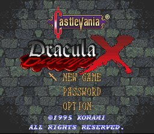
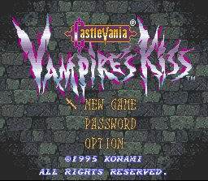
(ภาพ Title ในระบบ Europe)
Richter Belmont
ภาคนี้ตัวละครหลักคือ Richter Belmont
Anette แฟนของเขาถูก Dracula ลักพาตัวไป พร้อมทั้ง Maria น้องสาวของ
Anette
Richter จึงต้องออกไปตามหาพวกเธอกลับมา พร้อมทั้งกำจัด Dracula ด้วย
Password
ภาคนี้จะไม่มีระบบเซฟเกม แต่จะใช้ Password แทน
Ability
นอกจาก Richter จะใช้ Sub-Weapon ได้หลายชนิดแล้ว
เขายังสามารถเพิ่มพลังการใช้ Sub-Weapon ได้อีกด้วย
ทำได้โดยการกดปุ่ม "X"
Dagger
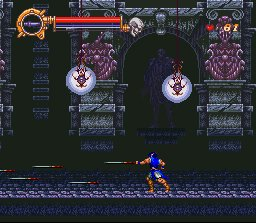
Axe
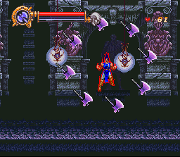
Holy Water
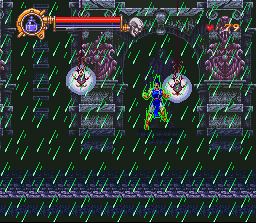
Holy Cross
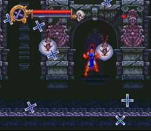
Stop Watch
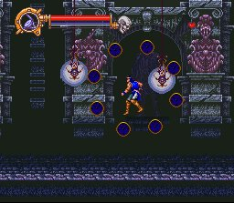
Fire Whip
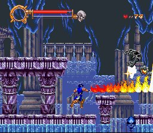
* Note : หาก Richter ไม่มี Sub-Weapon จะเป็นการใช้ "แส้ไฟ"
Item
Richter สามารถเก็บ Item ได้จากการทำลาย "เชิงเทียน" และผนังห้องบางแห่ง
ซึ่งภายในมี Item อยู่หลายชนิด ดังนี้
1 Up
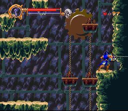
(เพิ่มจำนวนชีวิตให้แก่ Richter)
Meat
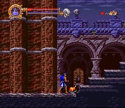
(ฟื้นฟู HP ให้แก่ Richter)
Game Over
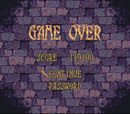
ในภาคนี้ไม่มีระบบเซฟ ดังนั้นเมื่อตายจนหมด
จะขึ้นหน้าจอมาให้ Continue
หากเลือก Continue จะเริ่มเล่นที่ฉากเดิม
Map
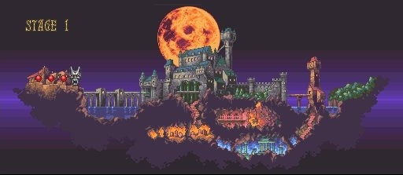
ภาคนี้เนื้อเรื่องจะดำเนินไปตาม Stage
ซึ่งจะมีเส้นทางให้ดูตามแผนที่
เริ่มต้น Stage 1
|